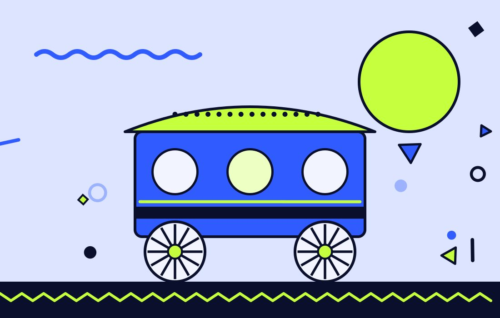
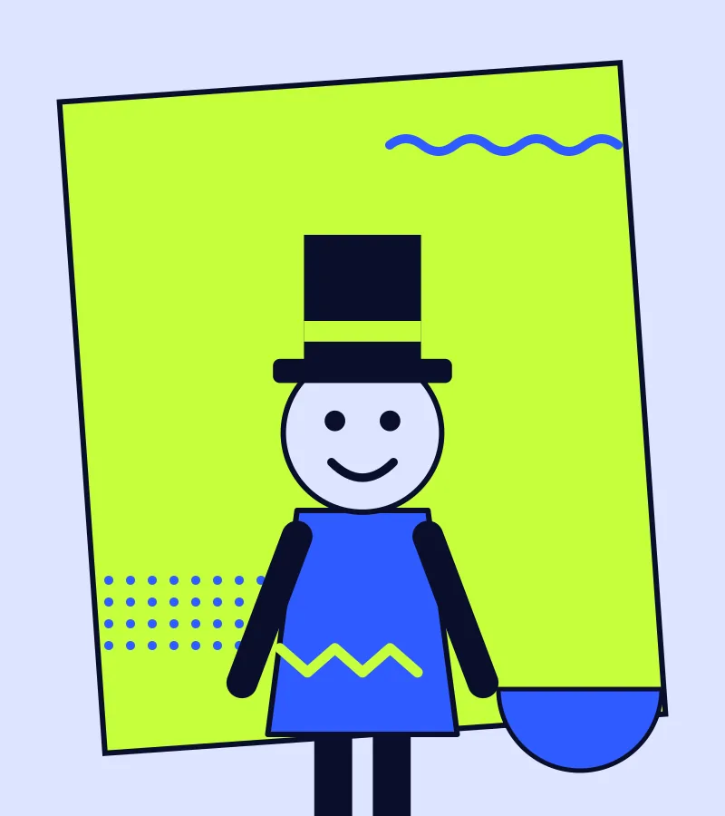

Unsere Geschichte
Alles begann mit einem alten Wagen, ganz viel Farbe und einer Oma, die sich nicht entmutigen ließ. Hier erzählen wir, wie aus einem kleinen Familienzirkus der bunteste Zirkus der Stadt wurde.

Wie alles begann
1987
Ein Wagen voller Punkte
Zita Zickzack war Seiltänzerin in einem großen Zirkus. Als der Zirkus schloss, kaufte sie einen alten Bauwagen und malte ihn an: blau, mit gelbgrünen Punkten, Dreiecken und Zickzack-Linien. Das war damals, in den Achtzigern, die modernste Art, Dinge zu gestalten. Mit dem Wagen zog sie von Schulhof zu Schulhof und zeigte Kindern, wie man auf einem Seil balanciert.
1995
Das erste eigene Zelt
Nach acht Jahren hatte Zita genug Geld gespart für ein kleines Zelt mit 150 Plätzen. Ihre Freund:innen aus der Artistenschule kamen dazu: ein Jongleur, eine Clownin und ein Musiker mit Akkordeon. Der Zirkus Zickzack war geboren.
2019
Zora übernimmt – und Rolf zieht ein
Zitas Enkelin Zora ist im Zirkuswagen aufgewachsen. Als sie den Zirkus übernahm, traf sie eine wichtige Entscheidung: keine echten Tiere mehr. Stattdessen baute sie mit einer Puppenbauerin aus Hamburg die Robbe Rolf – vier Meter lang, aus Schaumstoff und blauem Stoff.
2027
Die große Kringel-Tour
Dieses Jahr feiert der Zirkus 40 Jahre Zickzack. Darum gibt es eine ganz neue Show mit dem Titel „Hoch, höher, Zickzack!“ – und zum ersten Mal einen Mitmach-Workshop nach jeder Vorstellung.

Wer steckt dahinter?
Zora Zickzack ist 34 Jahre alt, Zirkusdirektorin und kann rückwärts Einrad fahren. Sie sagt: „Im Zirkus darf jedes Kind einmal der Star sein. Darum holen wir in jeder Show Kinder in die Manege.“
Das Team
- Kiki, Clownin seit 2005 und Erfinderin des verflixten Koffers
- Jonas, Jongleur, hält den Hausrekord mit neun Bällen
- Ayla, Akrobatin am Trapez, früher Turnerin im Leistungssport
- Mila und Tom Kreisel, das Einrad-Duo
- Paul und Pia, die Puppenspieler:innen in Robbe Rolf
Warum bei uns alles so bunt ist

Oma Zita hat den Wagen 1987 im sogenannten Memphis-Stil angemalt. So nannte man eine Gruppe von Designer:innen aus Mailand, die damals Möbel und Stoffe mit wilden Mustern, Kringeln und knalligen Farben gestaltet hat. Zita fand: Ein Zirkus muss genauso fröhlich aussehen.
Bis heute erkennt man den Zirkus Zickzack an seinen Formen: Kreise, Dreiecke, Punkte und Zickzack-Linien. Unser Zelt ist blau-weiß gestreift, die Fahne leuchtet gelbgrün. Kinder sagen oft, es sieht aus wie ein riesiges Bonbon. Wir finden, das ist das schönste Kompliment.